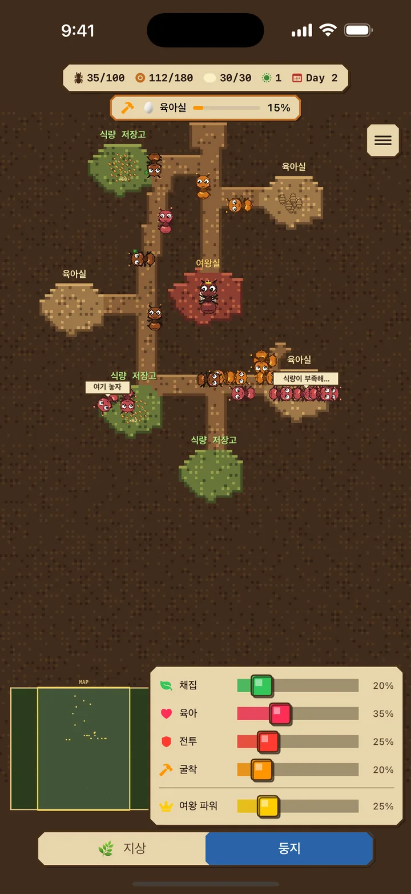
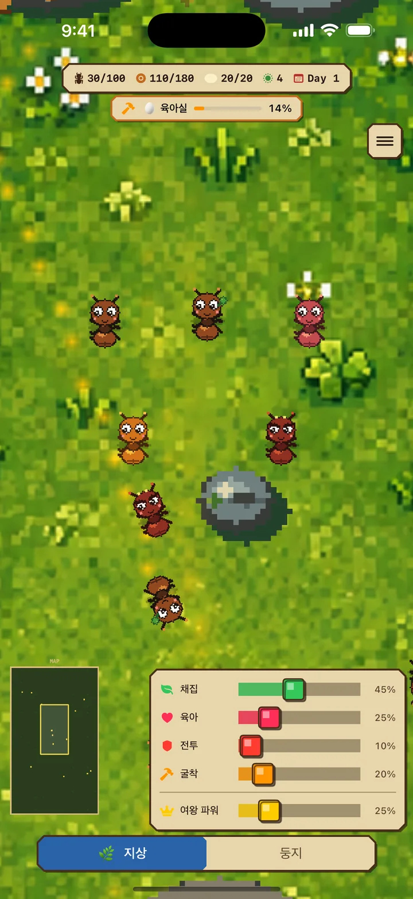
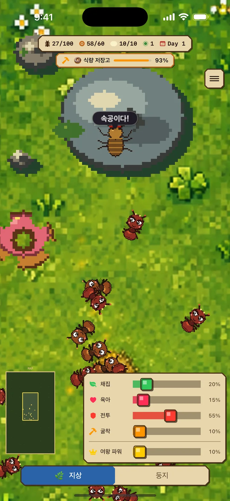
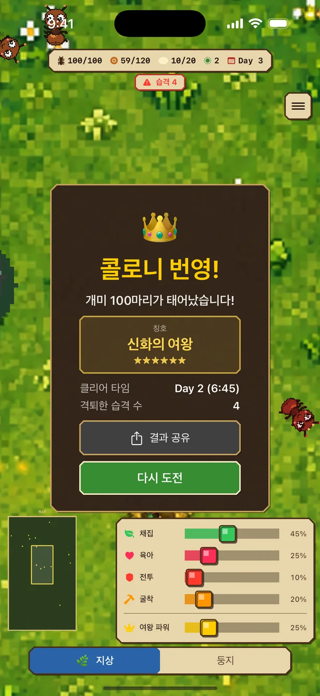

채집개미(초록)
지상에서 먹이를 모아 둥지로 운반
개미 일기 iOS
개미 군집 키우기 시뮬레이션 & 실시간 전략 게임
"개미 일기"는 개미 콜로니를 키우는 실시간 전략 게임입니다. 여왕개미를 중심으로 일개미들의 역할을 조절하며, 적의 습격을 이겨내고 100마리 콜로니를 만들어 보세요.
무료 · 광고 포함 / iPhone용 / iOS 17.0+


01 2개의 세계를 탐험
일개미를 굴착에 배치하면 기존 통로에서 둥지가 유기적으로 확장되고, 필요에 따라 먹이 창고나 육아실이 자동으로 생겨요.
지상: 먹이를 채집하고 적과 싸우는 위험한 세계
둥지: 유충을 키우고 방을 파서 확장하는 안전한 공간
방이 늘면 먹이와 육아 한도가 증가해요. 먹이 창고가 가득 차면 채집 개미는 기다렸다가 공간이 생기면 자동으로 다시 일해요.
02 4가지 역할로 전략을 세우자
상황에 맞게 역할 비율을 조절하는 것이 생존의 열쇠입니다.
지상에서 먹이를 모아 둥지로 운반
유충을 키워 새로운 일개미로 성장
적과 싸워 콜로니를 방어
땅을 파서 둥지를 넓혀요 — 방이 완성되면 먹이·육아 한도가 늘어요
여왕 파워를 높이면 산란 속도가 최대 3배가 됩니다. 대신 여왕의 허기는 최대 8배 빨라지고, 육아개미는 여왕 먹이기·알 운반·유충 돌보기를 모두 맡아야 합니다. 콜로니 상황에 맞춰 조절하세요.

03 적의 습격을 방어하라
시간이 지날수록 적의 공격이 격렬해집니다. 미리 병정개미를 늘려 대비하세요.
상황에 맞게 역할 비율을 조절하는 것이 생존의 열쇠입니다.
App Store에서 다운로드04 스코어 어택에 도전
개미 100마리 달성 시간에 따라 6단계 칭호가 결정됩니다. 15분 이내를 돌파해 '신화의 여왕'이 되어 보세요. 칭호마다 디자인이 달라지는 카드 이미지로 결과를 공유할 수 있습니다.
100마리 달성까지의 시간이 점수입니다. 최단 기록을 목표로 반복 도전하세요!


개미 일기
여왕개미를 지키고, 100마리 콜로니를 목표로!
App Store에서 다운로드무료 · 광고 포함 / iPhone용 / iOS 17.0+